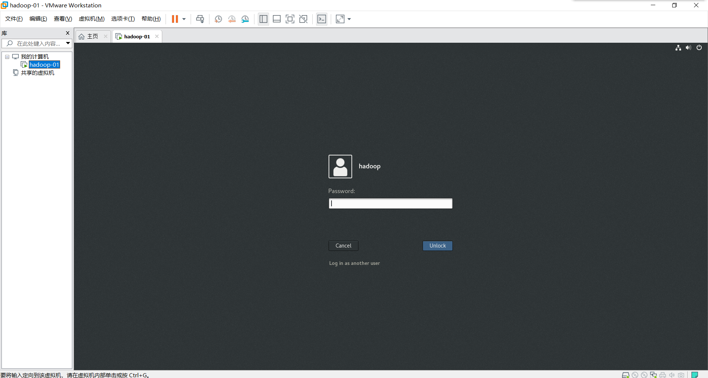
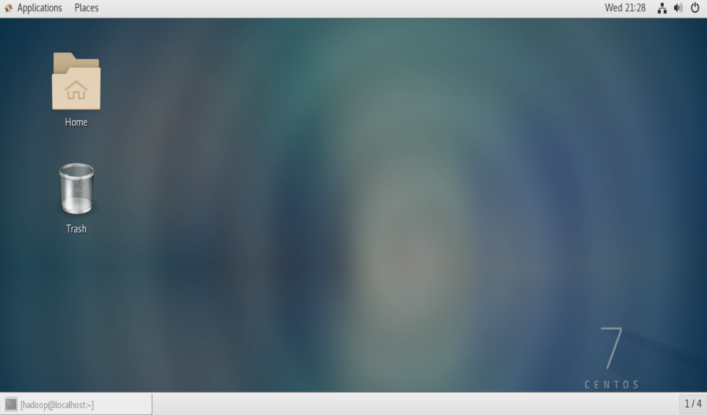
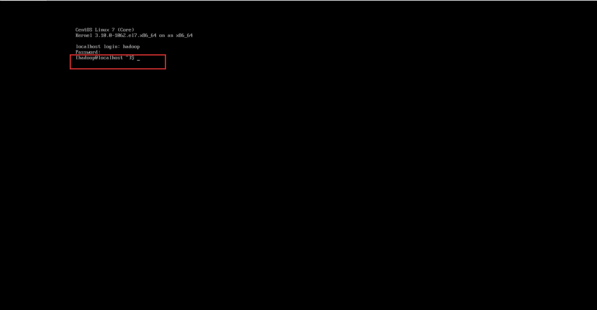
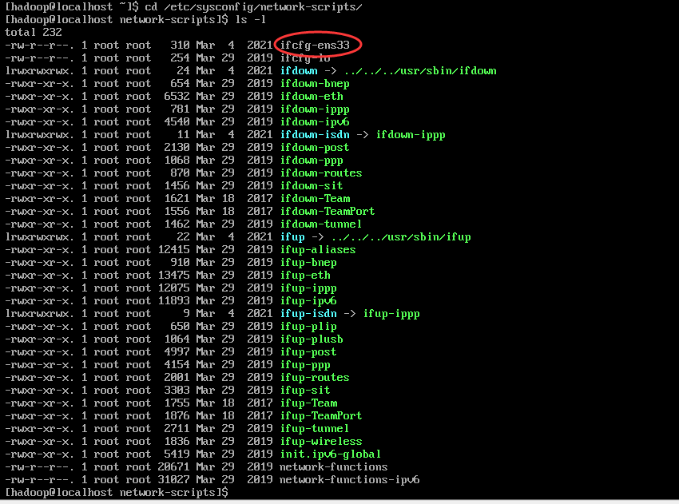
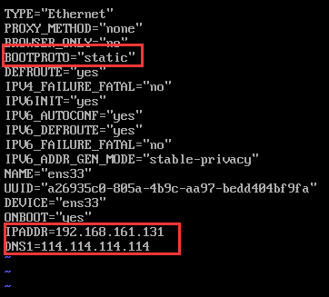
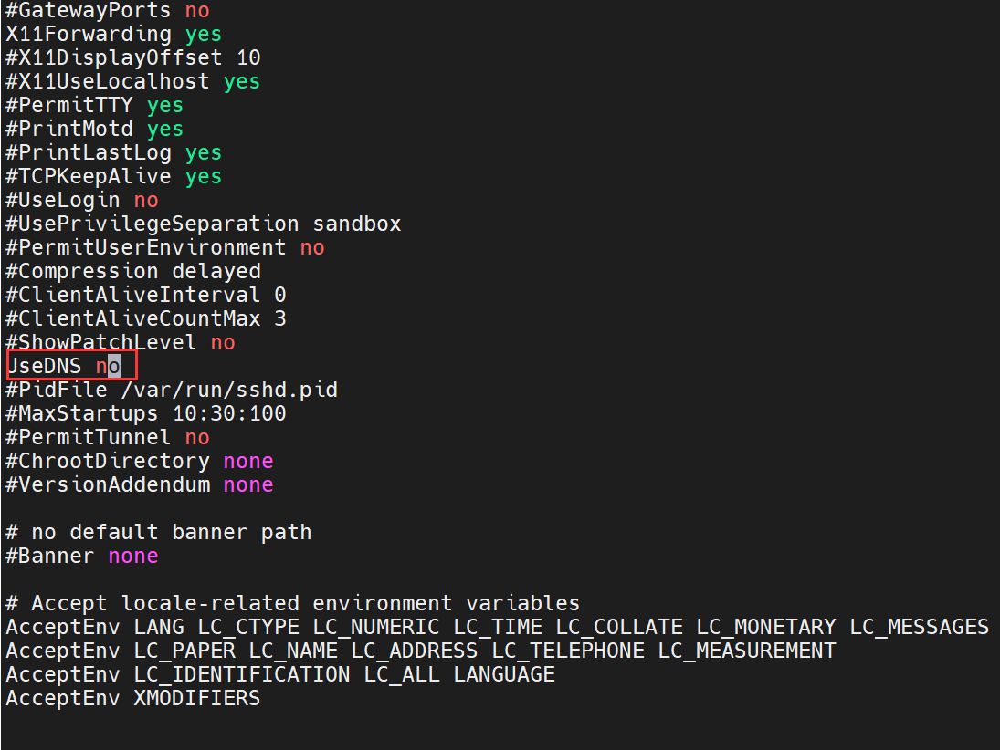
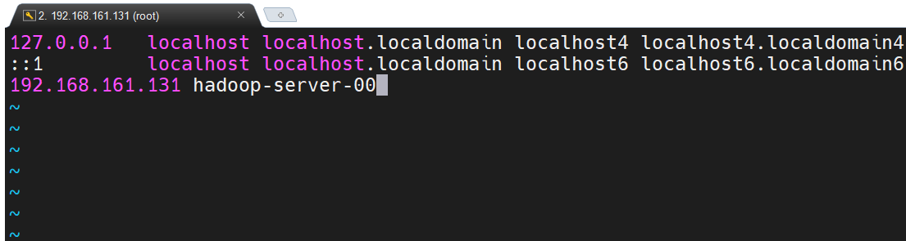
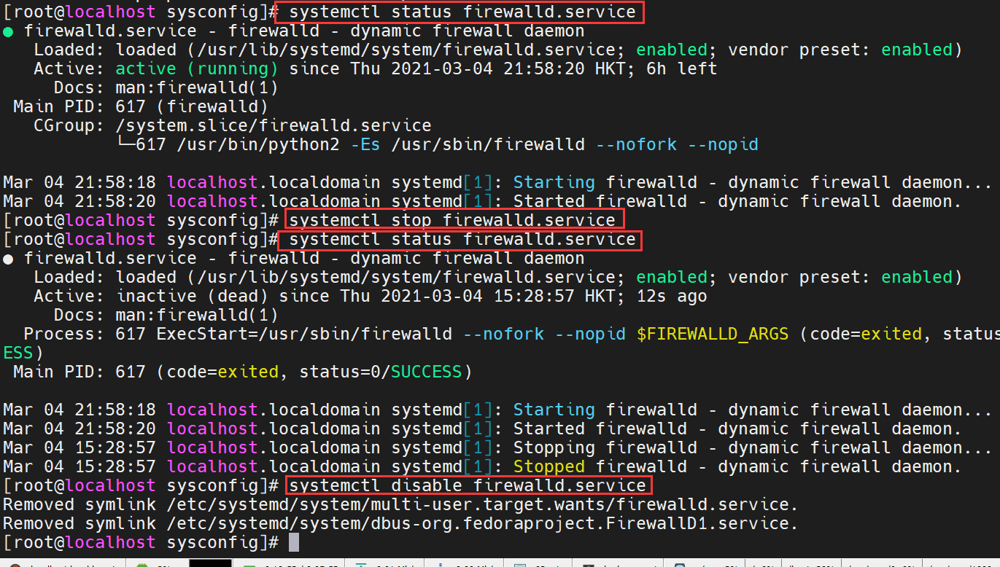
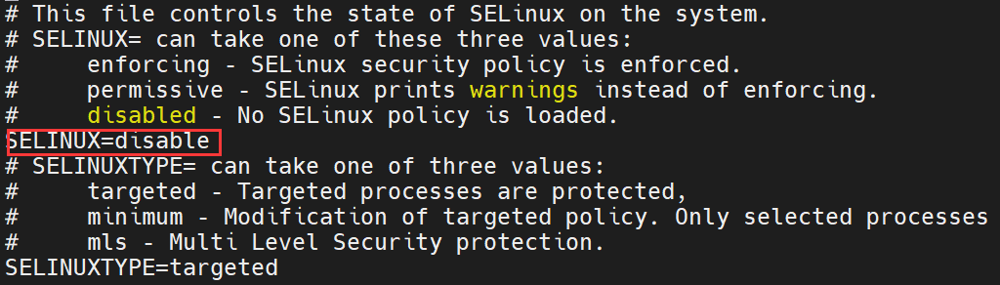

hadoop开发环境搭建(1)
Windows下的Hadoop开发环境搭建
一、软件准备
Windows10 64位，内存至少16G， VMware-workstation-full-15.5.5虚拟机软件，CentOS-7-x86_64-DVD-1908.iso系统镜像，hadoop-2.6.5.tar.gz，jdk-8u281-linux-x64.tar.gz，spark-2.4.7-bin-hadoop2.7.tgz，scala-2.13.5.tgz
二、安装LInux操作系统
虚拟机默认设置，硬盘20G，内存1G
1、虚拟机加载镜像默认安装
我们会进入CentOS的桌面环境，如下图所示

输入安装虚拟机时设置的密码，然后进入系统

2、虚拟机安装，设置CentOS为最小化安装
我们会进入命令行界面(多用户界面)
输入用户名，密码进入系统

三、设置Linux操作系统(最好使用root用户)
1、关闭图形界面(可选，当默认安装我们进入图形化界面后，最小化安装无需设置)
1、CentOS 6下关闭图形界面
1、关闭图形界面（鼠标右键打开终端）
[root@node1 opt]# init 3
2、启动图形界面
[root@node1 opt]# init 5
[root@node1 opt]# startx
3、进入桌面环境后
[root@node1 opt]# vim /etc/inittab
id:5:initdefault:
改成
id:3:initdefault:
2、CentOS 7下关闭图形界面
1、查看默认target开机模式
[root@node1 opt]# systemctl get-default
2、开机以命令模式启动
[root@node1 opt]# systemctl set-default multi-user.target
3、开机以图形化界面启动
[root@node1 opt]# systemctl set-default graphical.target
[root@node1 opt]# startx
2、设置IP地址
1、查看IP地址
CentOS6 使用ifconfig，CentOS7使用ip addr

2、修改IP地址(root用户)
1、切换到网卡目录
cd /etc/sysconfig/network-scripts/
2、查看网卡信息

3、编辑网卡信息
vi ifcfg-ens33

4、重启网络服务
service network restart
网卡信息配置完成后就可以用本地终端工具连接服务器了
3、关闭DNS验证
vi /etc/ssh/sshd_config

4、修改主机名和IP之间的映射
hostnamectl set-hostname hadoop-server-01
vi /etc/hosts

5、关闭防火墙

1、查看防火墙状态
systemctl status firewalld.service
2、关闭防火墙
systemctl stop firewalld.service
3、禁用防火墙
systemctl disable firewalld.service
6、禁用seLinux
vi /etc/selinux/config将SELINX修改为disable

7、设置ssh免密钥
生成ssh秘钥
ssh-keygen -t dsa -P ''
四、集群相关的架构设计
服务器对应的IP地址规划，主机名之间的规划等，例如现在要配置四台服务器的集群，IP分布，划分为192.168.161.131-134，主机名分别为Hadoop-server-01依次划分